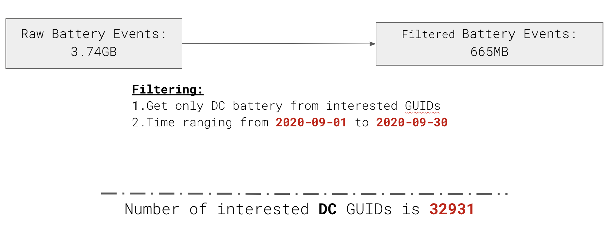
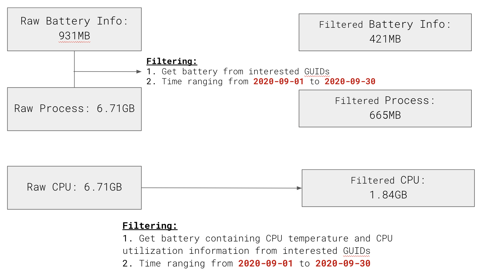

Device dataset would help us understand what kind of device our system is currently running on
devuse_4known_device.csv000.gz
devuse_4known_device.csv001.gz
Battery:
Battery Events dataset would provide us with activities log for batteries;
Battery Information dataset gave us a comprehension about the static information of batteries
batt_acdc_events.csv000.gz
batt_info.csv000.gz
Process:
Process dataset would provide information about different processes such as page faults
plist_process_resource_util_13wks.csv000.gz
CPU:
CPU related Dataset contains the information about CPU information, for example, current CPU temperature and CPU utilization
hw_metric_histo.csv000.gz
hw_metric_histo.csv001.gz
We prepared our data as follows:

We started with Device Usage related Dataset with filtering conditions of
i). device name must be ‘GUID DEVICE BATTERY’;
ii). The collected time should be within September of 2020. After loading Device Usage related Dataset, we obtained our interested GUIDs.

In order to filter out only DC battery, we switched focus on Battery Events related Datasets.
To filter out Battery Events dataset, we added the filtering conditions that the battery type should be ‘DC’ and the collected time should also be within September of 2020.
After this, we get a new set of our needed GUIDs, and we explored other datasets based on those needed GUIDs.
We utilized those GUIDs for further filtering on other datasets (e.g. Battery Information related Dataset,
Process related Dataset and CPU related Dataset). For CPU related Datasets,
one additional filtering condition we added is that the data must contain information about CPU utilization per each CPU core or information about CPU temperature in centigrade.
EDA
We chose 8 features as our features on building our regression model for predicting battery remaining minutes.
The reasons for selecting those 8 features are that:
1). From our experiences, we realized that when we have multiple process or devices are going on, usually the battery would have a lower remaining time;
2). When memory related issue occurs, it would always affect the performance of batteries. Therefore, we considered Page Faults and Memory as another features to select;
3). Static information of battery, for example, the full charged capacity or designed capacity would definitely define the attribute of battery, making the performance of battery different; 4). CPU related information would also be a factor the influence the battery remaining time.
Correlation Analysis indicates that there are weakly- negative correlation between battery minutes remaining and number of devices per guid, number of processes per guid, Average Page Faults per guid, Average CPU seconds per guid, Average Full Charge Capacity, Average CPU utilization per each CPU core, Average CPU temperature per guid.